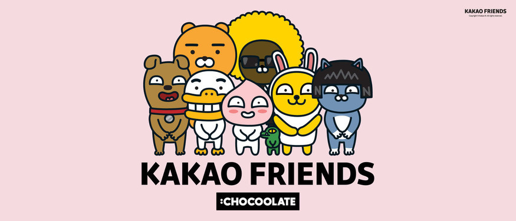

3거래일 연속 상승세
한 달 수익률 160% 달해
신작 출시·카카오재팬 합작사 기대감
카카오는 카카오엔터테인먼트 가 북미 웹소설 플랫폼래디쉬를 약 5000억원에 인수했다고 11일 밝혔다.

래디쉬는 지난 2016년 설립된 이래 자체 제작 콘텐츠인 ‘래디쉬 오리지널’이 인기를 끌며 영미권 시장에서 빠르게 성장해왔다.
2020년에는 전년 대비 10배 이상 증가한 230억원의 매출을 기록했고,
매출의 90% 이상을 래디쉬 오리지널이 차지할 만큼 자체 IP(지식재산권)에 대한 경쟁력을 갖춘 것으로 평가받는다.
래디쉬는 이번 인수를 통해 래디쉬가 가진 오리지널 IP가 카카오의 엔터테인먼트 비즈니스 노하우와 만나 더욱 강력한 시너지를 낼 수 있을 것으로 기대한다.